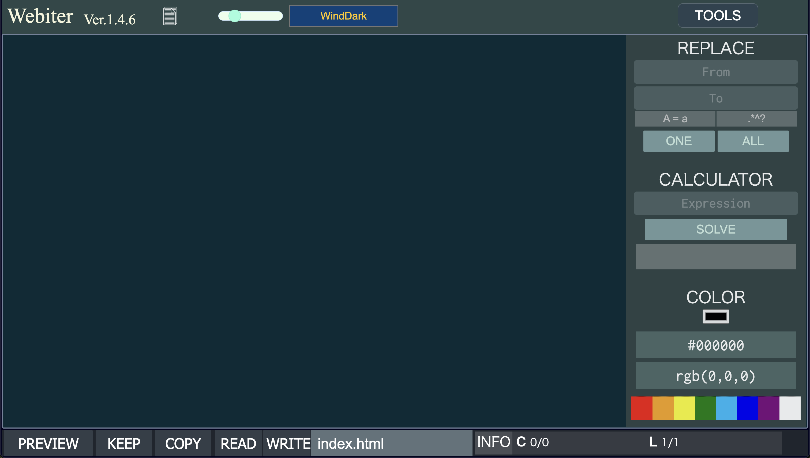

Webiterの強み
Webiterでは、高速なコーディングをサポートします。
コードの補完機能やショートカットキー、その他便利機能を備えており、
レイアウトもシンプルで見やすくまとめました。
また、なるべく動作が早くなるように作りましたので、
他の類似サービスと比較して圧倒的なパフォーマンスを誇っています。
[ 詳細を表示 ]
PageSpeed Insightsでの比較では、
パフォーマンスの点数が、
VSCodeというエディタが約50％、
CodePenというエディタが約60％だったのに対し、
Webiterでは100％となっております。
Webiterのスクリーンショット

<
>
以上、Webiterの紹介でした。
Webiterは
こちらから使用できます。
ソースは
こちらから確認できます。
Webiterを利用して、もっとHTMLを好きになってください！